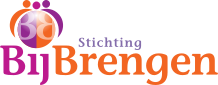
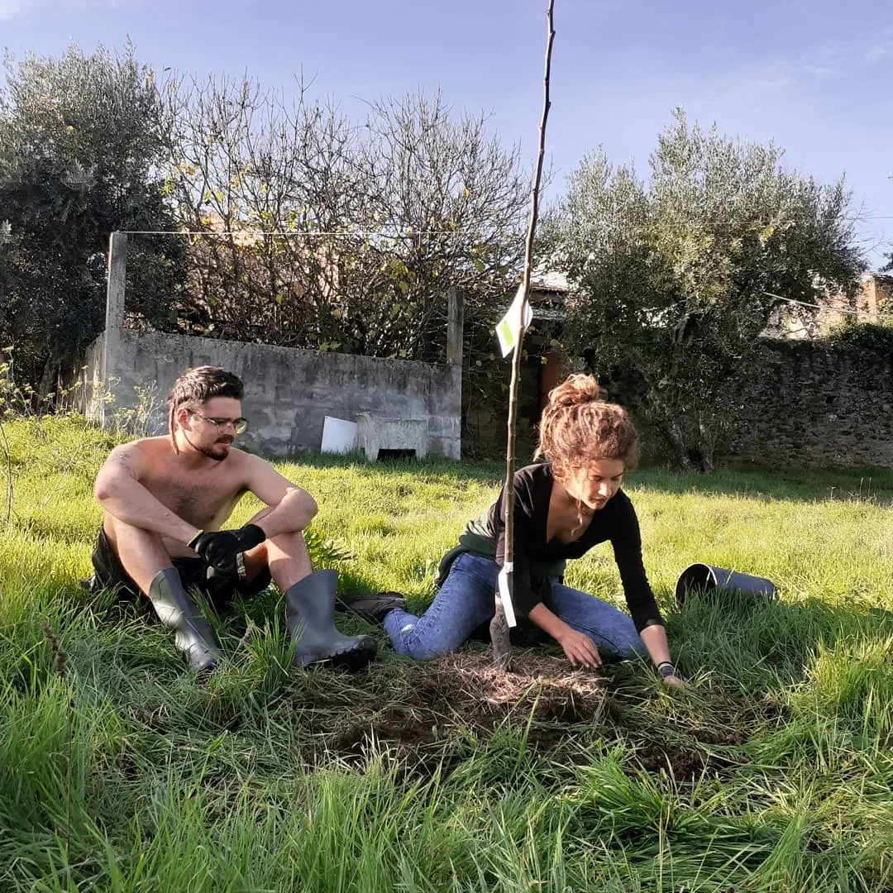
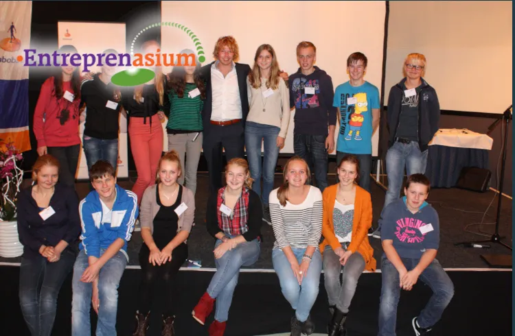
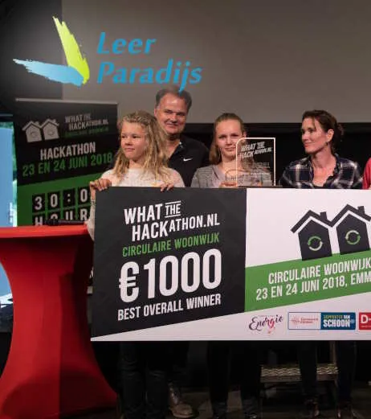
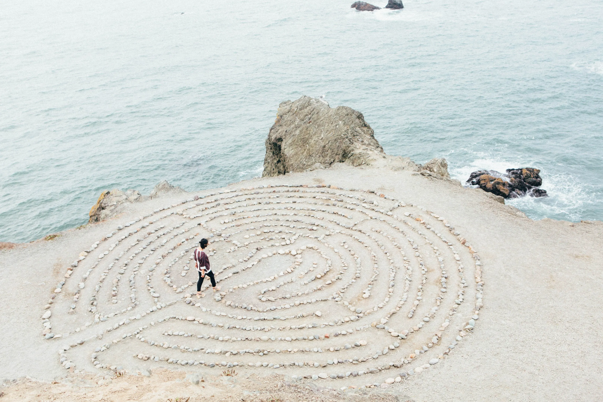
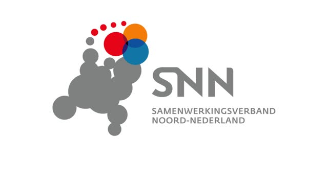
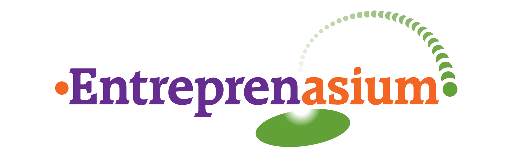
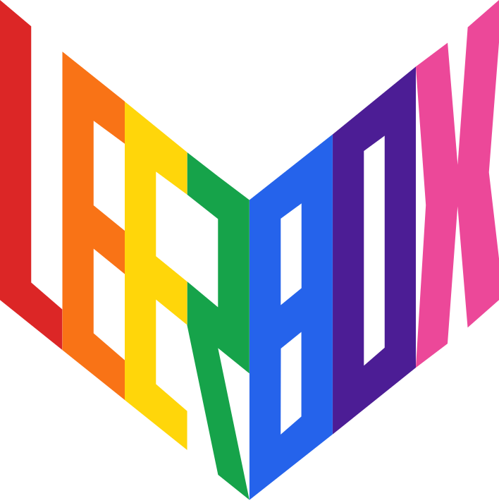

Stichting Bijbrengen
Bijbrengen is een stichting die zich inzet voor het bijbrengen van mensen door ze bij elkaar te brengen. Wij bieden verschillende vormen van leren aan, zoals zorg, coaching en onderwijs.






Europese samenwerking
Het project waarin Bijbrengen een leerpret-engine ontwikkelt, is mede mogelijk gemaakt door financiering van SNN (Samenwerkingsverband Noord Nederland) en de Europese Unie.
Zorg
Bijbrengen biedt verschillende vormen van zorg aan. Hiernaast vindt u een overzicht van de verschillende vormen van zorg die wij aanbieden.
Onderwijs
Bijbrengen biedt verschillende vormen van onderwijs aan. Hiernaast vindt u een overzicht van de verschillende vormen van onderwijs die wij aanbieden.
-
Leerparadijs
Voor jongeren met bijzondere talenten.
-

Entreprenasium
Onderwijs voor jonge entrepreneurs.
- Co-creeneur
Ondernemend leren vormgeven door ICT.
-

Leerbox
Het bieden van kant-en-klare, thematische onderwijsmaterialen die leerlingen uitdagen om te verwonderen, ontdekken en onderzoeken.
Coaching
Bijbrengen biedt verschillende vormen van coaching aan. Hiernaast vindt u een overzicht van de verschillende vormen van coaching die wij aanbieden.